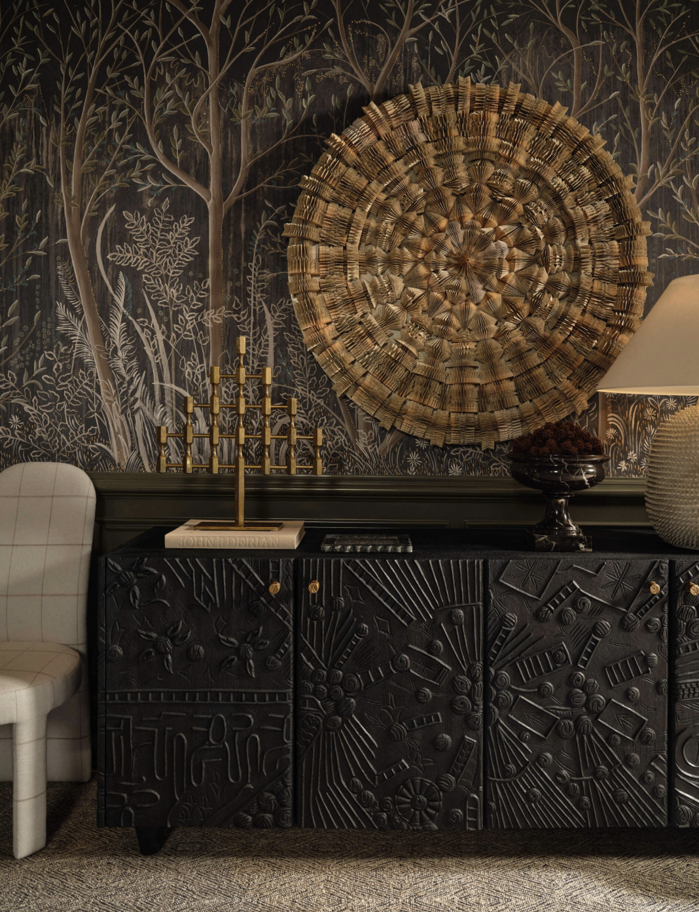
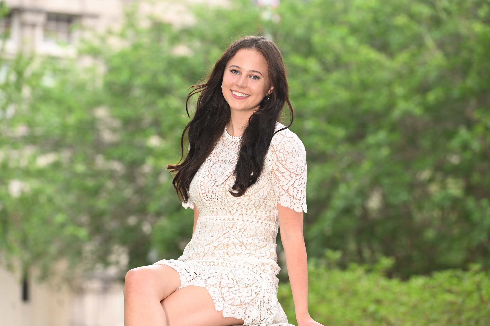
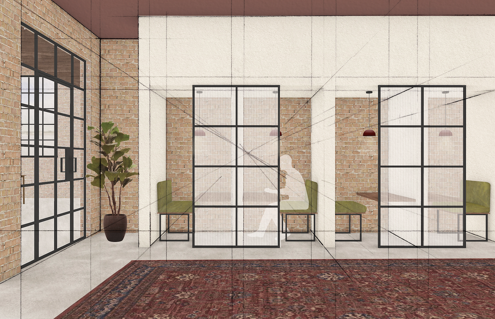
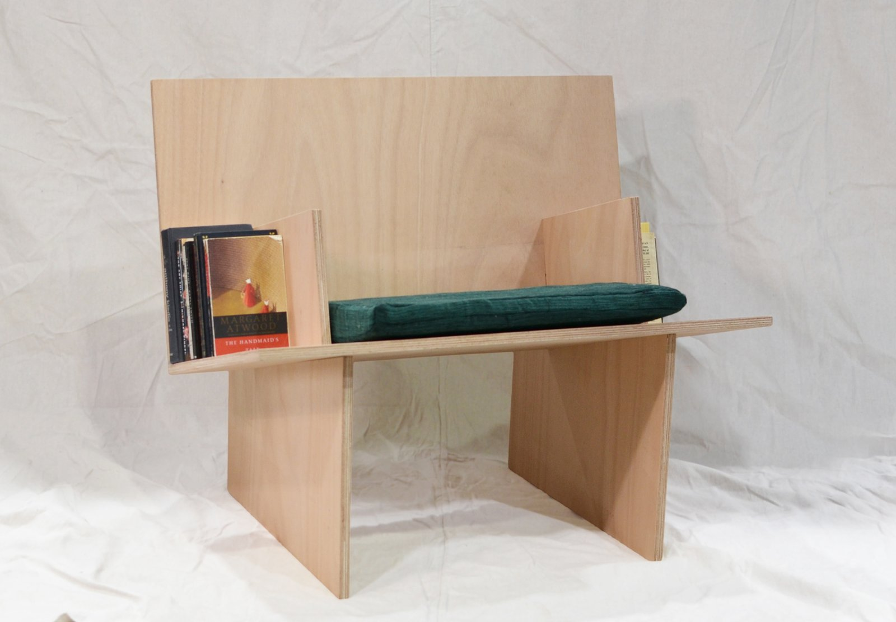
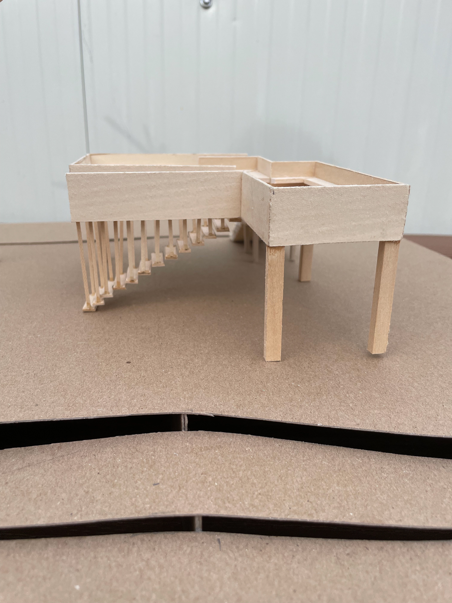

Kips Bay
Kips Bay
Showhouse Interior
Design
Showhouse Interior
Design
Designer & Visual Artist — Dallas / New Orleans
A designer working across interior design, textiles, painting, and graphic design — shaping spaces and objects that are thoughtful, sustainable, and made by hand.


Kips Bay
Relief Center
Book Lounger
Audubon PavilionFrom sourcing fabrics for the Dallas Kips Bay Show House to sustainable textiles auctioned for ricRACK and commissioned portraits for the Young Presidents' Organization — a practice rooted in craft, color, and reuse.
I'm a designer and visual artist pursuing a Bachelor of Arts in Design at Tulane University, where I'm an Honors Scholar on the Dean's List. My work spans interior design, sustainable textiles, fine art painting, and graphic design.
From building mood boards at a Dallas interior design studio to creating sustainable textile projects and commissioned portraits, I love bringing ideas to life — whether through Rhino3D renderings, hand drawing, or the canvas.
Open to design opportunities, commissions, and collaborations.